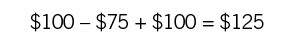
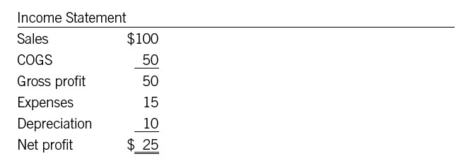
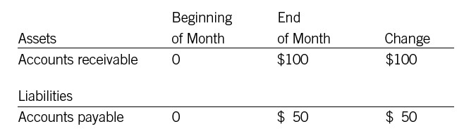
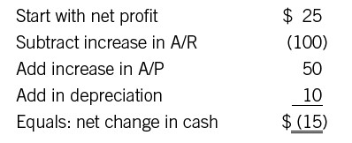
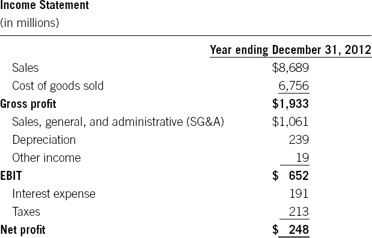
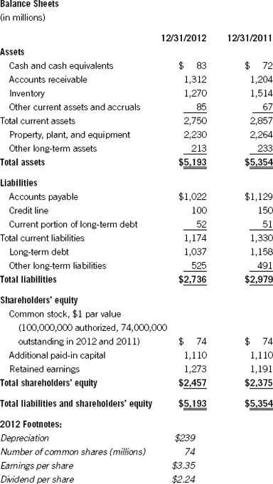
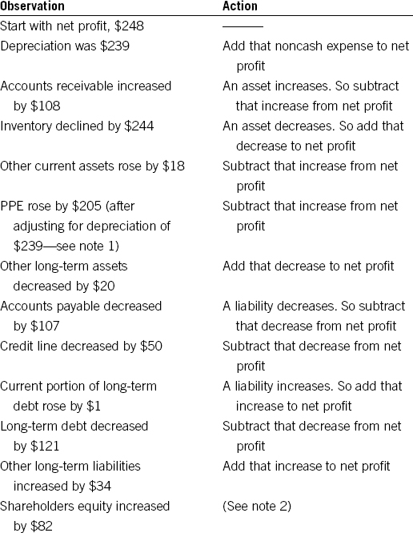
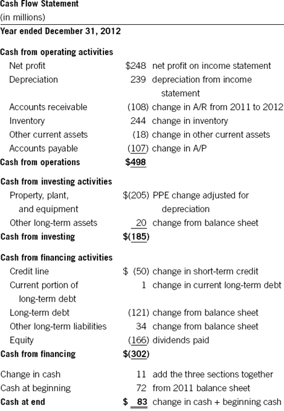

How Cash Connects with Everything Else
Once you’ve learned to read the cash flow statement, you can simply take it the way it comes and inspect it for what it tells you about your company’s cash situation. Then you can figure out how you affect it—how you as a manager can help better the business’s cash position. We’ll spell out some of these opportunities in chapter 19.
But if you’re the type of person who enjoys a puzzle—who likes to understand the logic of what you’re looking at—then stick with us through this chapter. Because it may have already dawned on you: you can calculate a cash flow statement just by looking at the income statement and two balance sheets.
The calculations aren’t hard: they involve no more than adding and subtracting. But it’s easy to get lost in the process. The reason is that accountants don’t just have a special language and a special set of tools and techniques; they also have a certain way of thinking. They understand that profit as reported on the income statement is the result of certain rules, assumptions, estimates, and calculations. They understand that assets as reported on the balance sheet aren’t “really” worth what the balance sheet says, again because of the rules, assumptions, and estimates that go into valuing them. But accountants also understand that the art of finance, as we have called it, doesn’t exist in the abstract. Ultimately, all those rules, assumptions, and estimates have to provide us with useful information about the real world. And since in finance the real world is represented by cash, the balance sheet and the income statement must have some logical relationship to the cash flow statement.
You can see the connections in common transactions. For example, take a credit sale of $100. It shows up as:
• an increase of $100 in accounts receivable on the balance sheet, and
• an increase in sales of $100 on the income statement
When the customer pays the bill, here’s what happens:
• accounts receivable decreases by $100, and
• cash increases by $100
These changes both appear on the balance sheet. But because cash is now involved, the transaction affects the cash flow statement as well.
You can watch the effect of all sorts of transactions in just this manner. Say a company buys $100 worth of inventory. The balance sheet records two changes: accounts payable rises by $100 and inventory rises by $100. When the company pays the bill, accounts payable decreases by $100 and cash decreases by $100—again, both on the balance sheet. When that inventory is sold (either intact, as by a retailer, or incorporated into a product by a manufacturer), $100 worth of cost of goods sold will be recorded on the income statement. The cash parts of these transactions—the original disbursement of cash to cover the $100 in accounts payable and the later receipt of cash from the sale of finished goods—will show up on the cash flow statement.
So all these transactions ultimately have an effect on the income statement, the balance sheet, and the cash flow statement. In fact, most transactions eventually find their way onto all three. To show you more of the specific connections, let us walk you through how accountants use the income statement and two balance sheets to calculate cash flow.
RECONCILING PROFIT AND CASH
The first exercise in this process is to reconcile profit to cash. The question you’re trying to answer here is pretty simple: given that we have $X in net profit, what effect does that have on our cash flow?
We start with net profit for this reason: if every transaction were completely in cash, and if there were no noncash expenses such as depreciation, then net profit and operating cash flow would be identical. But since in most businesses everything isn’t a cash transaction, we need to determine which line items on the income statement and the balance sheet had the effect of increasing or decreasing cash—in other words, making operating cash flow different from net profit. As accountants put it, we need to find “adjustments” to net profit that, when they are added up, let us arrive at the changes in cash flow.
One such adjustment is in accounts receivable. In any given time period, a company takes in some cash from receivables. That decreases the A/R line on the balance sheet. However, the company is also making more credit sales, which adds to the A/R line. We can “net out” the cash figure from these two kinds of transactions by looking at the change in receivables from one balance sheet to the next. (Remember, the balance sheet is for a specific day, so changes can be seen when you compare two balance sheets.)
Imagine, for example, that your company has $100 in receivables on the balance sheet at the start of the month. You take in $75 in cash during the month, and you make $100 worth of new credit sales. Here’s how you calculate the A/R line at the end of the month:

. . .
Reconciliation
In a financial context, reconciliation means getting the cash line on a company’s balance sheet to match the actual cash the company has in the bank—sort of like balancing your checkbook, but on a larger scale.
. . .
Since you began the month with $100 in receivables, the change in receivables from the beginning of the period to the end is $25. Note that the change is also equal to new sales ($100) minus cash received ($75). To put it differently, cash received is equal to new sales minus the change in receivables.
Another adjustment is depreciation. Depreciation is deducted from operating profit on the way to calculating net profit. But depreciation is a noncash expense, as we have learned; it has no effect on cash flow. So you have to add it back in.
A START-UP COMPANY
Clear? Probably not. So let’s imagine a very simple start-up company, with sales of $100 in the first month. The cost of goods sold during the month is $50, other expenses are $15, and depreciation is $10. You know that the income statement for the month will look like this:

Let’s assume that the sales are all receivables—no cash has yet come in—and COGS is all in payables. Using this information, we can construct two partial balance sheets:

Now we can take the first step in constructing a cash flow statement. The key rule here is that if an asset increases, cash decreases—so we subtract the increase from net profit. With a liability, the opposite is true. If liabilities increase, cash increases too—so we add the increase to net income.
Here are the calculations:

You can see that this is true, because the only cash expense the company had during the period was $15 in expenses. With a real company, however, you can’t confirm your results just by eyeballing them, so you need to calculate the cash flow statement scrupulously according to the same rules.
A REALISTIC COMPANY
Let’s try it with a more complex example. Here (for easy reference) are the income statement and balance sheets for the imaginary company whose financials appear in the appendix:


The same logic applies as in the simple example we gave earlier:
• Look at every change from one balance sheet to the next.
• Determine whether the change resulted in an increase or a decrease in cash.
• Then add or subtract the amount to or from net income.
Here are the steps:

Note 1: Why do we need to adjust for depreciation when looking at the change in property, plant, and equipment (PPE)? Remember that every year PPE on the balance sheet is lowered by the amount of depreciation charged to the assets in the account. So if you had a fleet of trucks that were acquired for $100,000, the balance sheet immediately after the acquisition would include $100,000 for trucks on the PPE line. If depreciation on the trucks was $10,000 for the year, then at the end of twelve months, the line in PPE for trucks would be $90,000. But depreciation is a noncash expense, and since we’re trying to arrive at a cash number, we have to “factor out” depreciation by adding it back in.
Note 2: Notice the dividends footnoted on the balance sheet? Multiply the dividend times the number of shares outstanding and you get roughly $166 million (which we’re representing as just $166). Net income of $248 minus the dividend of $166 equals $82—the precise amount by which shareholders equity increased. This is the amount of profit that stayed in the company as retained earnings. If there is no dividend paid out or new stock sold, then the cash provided or used by equity financing would be zero. Equity would simply increase or decrease by the amount of profit or loss in the period.
Now we can construct a cash flow statement along the following lines. Of course, with a full balance sheet like this one, you have to put the change in cash in the right categories as well. The words on the right show where each number comes from:

The “cash at end,” of course, equals the cash balance on the ending balance sheet.
This is a complicated exercise! But you can see that there’s a good deal of beauty and subtlety in all the connections (maybe only if you are an accountant). Go beneath the surface a little—or, to use another metaphor, read between the lines—and you can see how all the numbers relate to one another. Your financial intelligence is on the way up, as is your appreciation of the art of finance.